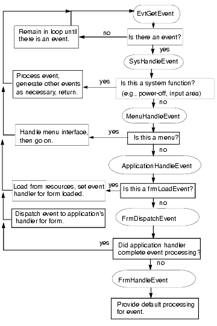

|
This chapter discusses the Event Manager, the main interface between the Palm OS® system software and the application. It discusses in some detail what an application does in response to user input, providing code fragments as examples where needed. The topics covered are:
• The Application Event Loop
• Low-Level Event Management
This chapter's focus is on how to write your applications main event loop. For more detailed information on events, consult the Palm OS Programmer's API Reference. Details for each event are given in Chapter 2, "Palm OS Events." In addition to the reference material, consult the chapter "User Interface" in this book. It provides the event flow for each user interface element.
Figure 3.1 illustrates control flow in a typical application.
Figure 3.1 Control Flow in a Typical Application

The Application Event Loop

As described in the previous chapter, "Application Startup and Stop," an application performs a full startup when it receives the launch code sysAppLaunchCmdNormalLaunch. It begins with a startup routine, then goes into an event loop, and finally exits with a stop routine.
In the event loop, the application fetches events from the queue and dispatches them, taking advantage of the default system functionality as appropriate.
While in the loop, the application continuously checks for events in the event queue. If there are events in the queue, the application has to process them as determined in the event loop. As a rule, the events are passed on to the system, which knows how to handle them. For example, the system knows how to respond to pen taps on forms or menus.
The application typically remains in the event loop until the system tells it to shut itself down by sending an appStopEvent (not a launch code) through the event queue. The application must detect this event and terminate.
Listing 3.1 Top-Level Event Loop Example from Datebook.c
static void EventLoop (void)
{
UInt16 error;
EventType event;
do
{
EvtGetEvent (&event, evtWaitForever);
PreprocessEvent (&event);
if (! SysHandleEvent (&event))
if (! MenuHandleEvent (NULL, &event, &error))
if (! ApplicationHandleEvent (&event))
FrmDispatchEvent (&event);
#if EMULATION_LEVEL != EMULATION_NONE
ECApptDBValidate (ApptDB);
#endif
}
while (event.eType != appStopEvent);
}
In the event loop, the application iterates through these steps (see Figure 3.1 and Listing 3.1)
1. Fetch an event from the event queue. 2. Call PreprocessEvent to allow the datebook event handler to see the command keys before any other event handler gets them. Some of the datebook views display UI that disappears automatically; this UI needs to be dismissed before the system event handler or the menu event handler display any UI objects. Note that not all applications need a PreprocessEvent function. It may be appropriate to call SysHandleEvent right away.
3. Call SysHandleEvent to give the system an opportunity to handle the event. The system handles events like power on/power off, Graffiti® or Graffiti 2 input, tapping input area icons, or pressing buttons. During the call to SysHandleEvent, the user may also be informed about low-battery warnings or may find and search another application.
Note that in the process of handling an event, SysHandleEvent may generate new events and put them on the queue. For example, the system handles Graffiti 2 input by translating the pen events to key events. Those, in turn, are put on the event queue and are eventually handled by the application.
SysHandleEvent returns true if the event was completely handled, that is, no further processing of the event is required. The application can then pick up the next event from the queue.
4. If SysHandleEvent did not completely handle the event, the application calls MenuHandleEvent. MenuHandleEvent handles two types of events: - If the user has tapped in the area that invokes a menu, MenuHandleEvent brings up the menu. - If the user has tapped inside a menu to invoke a menu command, MenuHandleEvent removes the menu from the screen and puts the events that result from the command onto the event queue. MenuHandleEvent returns true if the event was completely handled.
5. If MenuHandleEvent did not completely handle the event, the application calls ApplicationHandleEvent, a function your application has to provide itself. ApplicationHandleEvent handles only the frmLoadEvent for that event; it loads and activates application form resources and sets the event handler for the active form by calling the function FrmSetEventHandler. 6. If ApplicationHandleEvent did not completely handle the event, the application calls FrmDispatchEvent. FrmDispatchEvent first sends the event to the application's event handler for the active form. This is the event handler routine that was established in ApplicationHandleEvent. Thus the application's code is given the first opportunity to process events that pertain to the current form. The application's event handler may completely handle the event and return true to calls from FrmDispatchEvent.In that case, FrmDispatchEvent returns to the application's event loop. Otherwise, FrmDispatchEvent calls FrmHandleEvent to provide the system's default processing for the event. For example, in the process of handling an event, an application frequently has to first close the current form and then open another one, as follows:
- The application calls FrmGotoForm to bring up another form. FrmGotoForm queues a frmCloseEvent for the currently active form, then queues frmLoadEvent and frmOpenEvent for the new form. - When the application gets the frmCloseEvent, it closes and erases the currently active form. - When the application gets the frmLoadEvent, it loads and then activates the new form. Normally, the form remains active until it's closed. (Note that this wouldn't work if you preload all forms, but preloading is really discouraged. Applications don't need to be concerned with the overhead of loading forms; loading is so fast that applications can do it when they need it.) The application's event handler for the new form is also established. - When the application gets the frmOpenEvent, it performs any required initialization of the form, then draws the form on the display. After FrmGotoForm has been called, any further events that come through the main event loop and to FrmDispatchEvent are dispatched to the event handler for the form that's currently active. For each dialog or form, the event handler knows how it should respond to events, for example, it may open, close, highlight, or perform other actions in response to the event. FrmHandleEvent invokes this default UI functionality.
After the system has done all it can to handle the event for the specified form, the application finally calls the active form's own event handling function. For example, in the datebook application, it may call DayViewHandleEvent or WeekViewHandleEvent.
Notice how the event flow allows your application to rely on system functionality as much as it wants. If your application wants to know whether a button is pressed, it has only to wait for ctlSelectEvent. All the details of the event queue are handled by the system.
Some events are actually requests for the application to do something, for example, frmOpenEvent. Typically, all the application does is draw its own interface, using the functions provided by the system, and then waits for events it can handle to arrive from the queue.
Only the active form should process events.
Low-Level Event Management
The five ways that a user interacts with an application are:
• by writing letters, numbers, or symbols in the input area
• by pressing a hardware button on the handheld
• by tapping the pen on a control in a form or dialog
• by tapping on an onscreen keyboard in the keyboard dialog.
• by tapping in the menu bar or in a particular menu.
For the first three types of input, the Palm OS provides a dedicated manager: the Graffiti Manager, the Key Manager, and the Pen Manager, respectively. Most applications do not need to access these managers directly; instead, applications receive events from these managers and respond to the events. There are cases, however, where you might need to interact with one of these managers. The following pages describe each of these managers and when you might need to use them. To learn how to obtain user input from a UI object, refer to the section in Chapter 4, "User Interface," that covers that object.
The keyboard dialog allows users to input characters into a text field by tapping an onscreen keyboard. When the keyboard dialog is closed, the amended text is automatically displayed in the original field. As with the three managers just mentioned, you will probably not need to access the keyboard dialog directly. The user can open the keyboard from any text field. In certain limited circumstances, however, you may wish to display the keyboard dialog programmatically. For more information, see "The Keyboard Dialog".
The Menu Manager handles taps that display a menu and those that select an item from a menu. For details, see "Menus."
In addition to these managers, the System Event Manager is another manager involved in low-level event handling. Most applications have no need to call the System Event Manager directly because most of the functionality they need comes from the higher-level Event Manager or is automatically handled by the system.
This section provides information about the following managers:
• The Graffiti Manager
• The Key Manager
• The Pen Manager
• The System Event Manager
The Graffiti Manager
The Graffiti Manager provides an API to the Palm OS Graffiti or Graffiti 2 recognizer. The recognizer converts pen strokes into key events, which are then fed to an application through the Event Manager.
IMPORTANT: If the Graffiti 2 Feature Set is present, many of the Graffiti Manager API calls are deprecated or work differently. Avoid using the Graffiti Manager API.
Most applications never need to call the Graffiti Manager directly because it's automatically called by the Event Manager whenever it detects pen strokes in the input area of the digitizer.
Special-purpose applications, such as a Graffiti tutorial, may want to call the Graffiti Manager directly to recognize strokes in other areas of the screen or to customize the Graffiti behavior.
Using GrfProcessStroke
GrfProcessStroke is a high-level Graffiti Manager call used by the Event Manager for converting pen strokes into key events. The call
• Removes pen points from the pen queue
• Recognizes the stroke
• Puts one or more key events into the key queue
GrfProcessStroke automatically handles shortcut strokes and calls the user interface as appropriate to display shift indicators in the current window.
An application can call GrfProcessStroke when it receives a penUpEvent from the Event Manager if it wants to recognize strokes entered into its application area (in addition to the input area).
Using Other High-Level Graffiti Manager Calls
Other high-level calls provided by the Graffiti Manager include routines for
• Getting and setting the current shift state (caps lock on/off, temporary shift state, etc.)
• Notifying the handwriting recognizer when the user selects a different field. The handwriting recognizer needs to be notified when a field change occurs so that it can cancel out of any partially entered shortcut and clear its temporary shift state if it's showing a potentially accented character.
Note that if the Graffiti 2 Feature Set is present, the caps lock state is not supported. In Graffiti 2 handwriting, users write uppercase letters by writing between the dividers that separate the letter area from the number area. Because users can easily write a succession of uppercase letters, the caps lock state is unnecessary.
Special-Purpose Graffiti Manager Calls
The remainder of Graffiti Manager API routines are for special-purpose use. They are basically all the entry points into the Graffiti recognizer engine and are usually called only by GrfProcessStroke. These special-purpose uses include calls to add pen points to the Graffiti recognizer's stroke buffer, to convert the stroke buffer into a Graffiti glyph ID, and to map a glyph into a string of one or more key strokes.
IMPORTANT: If the Graffiti 2 Feature Set is present, the special-purpose Graffiti Manager calls are deprecated.
Accessing Shortcuts
Other routines provide access to the Graffiti or Graffiti 2 Shortcuts database. This is a separate database owned and maintained by the Graffiti Manager that contains all of the shortcuts. In Palm OS version 3.5 and earlier releases, this database is opened by the Graffiti Manager when it initializes and stays open even after applications quit. Starting in Palm OS 4.0, the database is only opened when necessary and is closed when it is no longer needed.
The only way to modify this database is through the Graffiti Manager API. It provides calls for getting a list of all shortcuts, and for adding, editing, and removing shortcuts. The Shortcuts screen of the Preferences application provides a user interface for modifying this database.
Note on Auto Shifting
The Palm OS 2.0 and later automatically uses an upper-case letter under the following conditions:
• Period and space or Return.
• Other sentence terminator (such as ? or !) and space
This functionality requires no changes by the developer, but should be welcome to the end user.
Note that the auto-shifting rules are language-specific, since capitalization differs depending on the region. These rules depend on the version of the ROM, the market into which the handheld is being sold, and so on.
Note on Graffiti Help
In Palm OS 2.0 and later, applications can pop up Graffiti help by calling SysGraffitiReferenceDialog or by putting a virtual character-graffitiReferenceChr from Chars.h-on the queue.
Graffiti help is also available through the system Edit menu. As a result, any application that includes the system Edit menu allows users to access Graffiti help that way.
The Key Manager
The Key Manager manages the hardware buttons on the Palm Powered™ handheld. It converts button presses into key events and implements auto-repeat of the buttons. Most applications never need to call the Key Manager directly except to change the key repeat rate or to poll the current state of the keys.
The Event Manager is the main interface to the keys; it returns a keyDownEvent to an application whenever a button is pressed. Normally, applications are notified of key presses through the Event Manager. Whenever a hardware button is pressed, the application receives an event through the Event Manager with the appropriate key code stored in the event record. The state of the hardware buttons can also be queried by applications at any time through the KeyCurrentState function call.
The KeyRates call changes the auto-repeat rate of the hardware buttons. This might be useful to game applications that want to use the hardware buttons for control. The current key repeat rates are stored in the Key Manager globals and should be restored before the application exits.
The Pen Manager
The Pen Manager manages the digitizer hardware and converts input from the digitizer into pen coordinates. The Palm Powered handheld has a built-in digitizer overlaid onto the LCD screen and extending about an inch below the screen. This digitizer is capable of sampling accurately to within 0.35 mm (.0138 in) with up to 50 accurate points/second. When the handheld is in doze mode, an interrupt is generated when the pen is first brought down on the screen. After a pen down is detected, the system software polls the pen location periodically (every 20 ms) until the pen is again raised.
Most applications never need to call the Pen Manager directly because any pen activity is automatically returned to the application in the form of events.
Pen coordinates are stored in the pen queue as raw, uncalibrated coordinates. When the System Event Manager routine for removing pen coordinates from the pen queue is called, it converts the pen coordinate into screen coordinates before returning.
The Preferences application provides a user interface for calibrating the digitizer. It uses the Pen Manager API to set up the calibration which is then saved into the Preferences database. The Pen Manager assumes that the digitizer is linear in both the x and y directions; the calibration is therefore a simple matter of adding an offset and scaling the x and y coordinates appropriately.
The System Event Manager
The System Event Manager:
• manages the low-level pen and key event queues.
• translates taps on input area icons into key events.
• sends pen strokes in the input area to the Graffiti or Graffiti 2 recognizer.
• puts the system into low-power doze mode when there is no user activity.
Most applications have no need to call the System Event Manager directly because most of the functionality they need comes from the higher-level Event Manager or is automatically handled by the system.
Applications that do use the System Event Manager directly might do so to enqueue key events into the key queue or to retrieve each of the pen points that comprise a pen stroke from the pen queue.
Event Translation: Pen Strokes to Key Events
One of the higher-level functions provided by the System Event Manager is conversion of pen strokes on the digitizer to key events. For example, the System Event Manager sends any stroke in the input area of the digitizer automatically to the Graffiti or Graffiti 2 recognizer for conversion to a key event. Taps on input area icons, such as the Application button, Menu button, and Find button, are also intercepted by the System Event Manager and converted into the appropriate key events.
When the system converts a pen stroke to a key event, it:
• Retrieves all pen points that comprise the stroke from the pen queue
• Converts the stroke into the matching key event
• Enqueues that key event into the key queue
Eventually, the system returns the key event to the application as a normal result of calling EvtGetEvent.
Most applications rely on the following default behavior of the System Event Manager:
• All strokes in the predefined input area of the digitizer are converted to key events
• All taps on the input area icons are convert to key events
• All other strokes are passed on to the application for processing
If the Graffiti 2 Feature Set is present, you should be careful when processing key events one at a time. Graffiti 2 contains several multi-stroke characters. If the first stroke matches the stroke for another letter, the Graffiti 2 engine first enqueues the single-stroke character followed by a backspace and the multi-stroke character.
For example, The first stroke of a "k" character matches the stroke for the "l" character. When the user draws the first stroke of the "k," the Graffiti 2 engine processes that stroke and sends the "l" character to the key queue. When the user draws the second stroke of the "k," the Graffiti 2 engine sends a backspace to erase the "l" and then sends the "k" character. If your application has processed the "l" in the meantime, it has done so in error.
If your application processes characters as they are received, you should be aware that the following characters could be the first stroke of a multi-stroke character:
• The letter l
• The space character
• The single quote
• The minus sign
When your application receives these characters, it should wait to see if the next character received is a backspace.
Pen Queue Management
The pen queue is a preallocated area of system memory used for capturing the most recent pen strokes on the digitizer. It is a circular queue with a first-in, first-out method of storing and retrieving pen points. Points are usually enqueued by a low-level interrupt routine and dequeued by the System Event Manager or application.
Table 3.1 summarizes pen management.
Table 3.1 Pen queue management
| The user... |
The system... |
| Brings the pen down on the digitizer. |
Stores a pen-down sequence in the pen queue and starts the stroke capture. |
| Draws a character. |
Stores additional points in the pen queue periodically. |
| Lifts the pen. |
Stores a pen-up sequence in the pen queue and turns off stroke capture. |
The System Event Manager provides an API for initializing and flushing the pen queue and for queuing and dequeuing points. Some state information is stored in the queue itself: to dequeue a stroke, the caller must first make a call to dequeue the stroke information (EvtDequeuePenStrokeInfo) before the points for the stroke can be dequeued. Once the last point is dequeued, another EvtDequeuePenStrokeInfo call must be made to get the next stroke.
Applications usually don't need to call EvtDequeuePenStrokeInfo because the Event Manager calls this function automatically when it detects a complete pen stroke in the pen queue. After calling EvtDequeuePenStrokeInfo, the System Event Manager stores the stroke bounds into the event record and returns the pen-up event to the application. The application is then free to dequeue the stroke points from the pen queue, or to ignore them altogether. If the points for that stroke are not dequeued by the time EvtGetEvent is called again, the System Event Manager automatically flushes them.
Key Queue Management
The key queue is an area of system memory preallocated for capturing key events. Key events come from one of two occurrences:
• As a direct result of the user pressing one of the buttons on the case
• As a side effect of the user drawing a Graffiti or Graffiti 2 stroke on the digitizer, which is converted in software to a key event
Table 3.2 summarizes key management.
Table 3.2 Key queue management
| User action |
System response |
| Hardware button press. |
Interrupt routine enqueues the appropriate key event into the key queue, temporarily disables further hardware button interrupts, and sets up a timer task to run every 10 ms. |
| Hold down key for extended time period. |
Timer task to supports auto-repeat of the key (timer task is also used to debounce the hardware). |
| Release key for certain amount of time. |
Timer task reenables the hardware button interrupts. |
| Pen stroke in input area of digitizer. |
System Manager calls the Graffiti or Graffiti 2 recognizer, which then removes the stroke from the pen queue, converts the stroke into one or more key events, and finally enqueues these key events into the key queue. |
| Pen stroke on silk-screened icons. |
System Event Manager converts the stroke into the appropriate key event and enqueues it into the key queue. |
The System Event Manager provides an API for initializing and flushing the key queue and for enqueuing and dequeuing key events. Usually, applications have no need to dequeue key events; the Event Manager does this automatically if it detects a key in the queue and returns a keyDownEvent to the application through the EvtGetEvent call.
Auto-Off Control
Because the System Event Manager manages hardware events like pen taps and hardware button presses, it's responsible for resetting the auto-off timer on the handheld. Whenever the system detects a hardware event, it automatically resets the auto-off timer to 0. If an application needs to reset the auto-off timer manually, it can do so through the System Event Manager call EvtResetAutoOffTimer.
System Event Manager Summary
| System Event Manager Functions |
| Main Event Queue Management |
| |
|
| |
|
| |
|
| |
|
| Pen Queue Management |
|
| |
|
| |
|
| |
|
| |
|
| Key Queue Management |
| |
|
| |
|
| |
|
| Handling pen strokes and key strokes |
| |
|
| Handling input area |
| |
|
| Handling power on and off events |
| |
|
| |
|
| Graffiti Manager Functions |
|
| Translate a Stroke into Keyboard Events |
| |
|
| Shift State |
|
| |
|
| Point Buffer |
|
| |
|
| Working with Macros |
|
| |
|
|